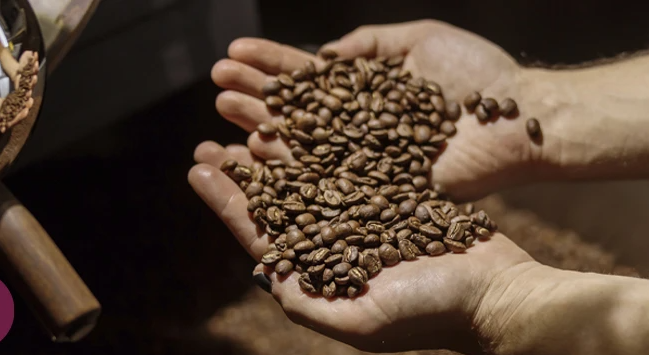

Cursos · Nivel Intermedio
Taller de Tostado Artesanal
Lleva tu pasión por el café al siguiente nivel. Descubre la ciencia, el arte y los secretos detrás del tostado perfecto en una experiencia 100% práctica.

¿Qué vas a aprender?
El Grano Verde
Aprenderás a identificar la densidad, humedad y los defectos del café verde antes de entrar a la tostadora.
Perfiles de Tueste
Controla variables clave como el tiempo, flujo de aire y temperatura para resaltar notas dulces, ácidas o amargas.
Análisis y Cata
Evaluaremos los lotes tostados mediante una sesión de cata profesional para validar los resultados obtenidos.
Duración
5 Horas (Intensivo) con 1 hora de break
Costo
$1000 MXN (Incluye insumos)
Lugar
Laboratorio BlogDeCafé Centro